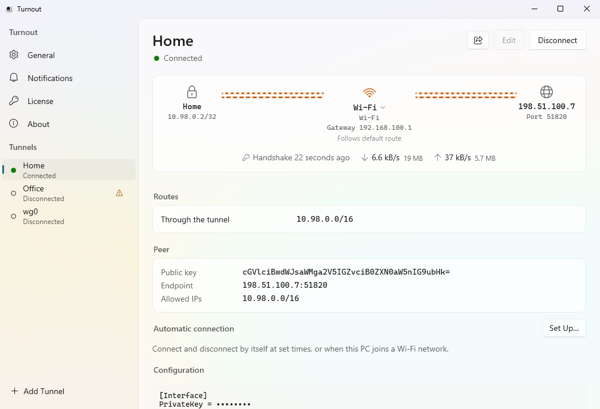
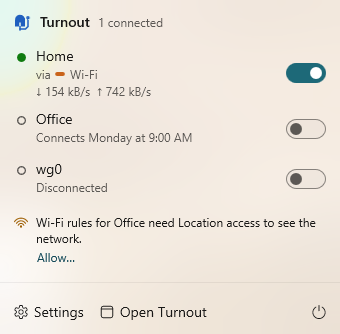

Windows版Turnout
WireGuardサーバーに接続する同じVPNクライアントが、Windows 11でも使えます。構成ファイルはwg-quickが読むとおりに扱い、ネットワークインターフェイスはトンネルごとにあなたが選び、トンネルはスケジュールやWi-Fiネットワークに合わせて自動で接続します。Turnoutは通知領域にいて、1つのライセンスでMacとPCをまとめて使えます。
バージョン1.1.3（公開）· リリースノート
x64 PC（IntelまたはAMD）のWindows 11 · 7日間の試用 · US$19の買い切り、コンピュータ3台（MacでもWindowsでも）

Macと同じところ
- 構成ファイルはwg-quickのとおりに。WireGuardの
.confファイルや、それをまとめたzip（公式アプリが書き出したものを含む）を読み込み、また書き出せます。エディタにはフォームとテキストがあり、コメントやエディタが知らない行も、書いたとおりに残ります。 - ネットワークインターフェイスを選べます。
#@ BindInterfaceは、トンネルの暗号化された通信を、指定したアダプタ（たとえばEthernet 2）から送り出します。#@ Route … devは、選んだネットワークを、トンネルではなくアダプタから送り出します。どのアダプタが通信を運んでいるかは、各トンネルの上部にある経路に表示されます。 - 自動で接続。スケジュールや、一覧にしたWi-Fiネットワークに合わせて、トンネルが接続され、また接続が解除されます。その間に手動で行った操作はそのまま保たれます。
- フック。
PreUp、PostUp、PreDown、PostDownは、管理者が承認すれば、Macと同じように実行されます。 - 通知、5つの言語、1つのライセンス。同じ通知、メニュー、ウインドウが、English、繁體中文、日本語、Español、한국어で表示されます。そして1つのライセンスで、MacでもWindowsでも、コンピュータ3台に使えます。
異なるところ
- 通知領域にいます。Turnoutのアイコンをクリックすると、すべてのトンネルとそのスイッチが並んだパネルが開きます。ウインドウには、各トンネルの経路、ルート、ピア、構成と、設定があります。Windowsは新しいアイコンをタスクバーの^の中にしまうことがあります。常に見えるようにするには、アイコンをタスクバーにドラッグするか、“設定” › “個人用設定” › “タスク バー” › “その他のシステム トレイ アイコン”でTurnoutをオンにしてください。
- フルトンネルは、通信をトンネルの外に出しません。すべての通信を通すトンネルが接続している間、Windowsのファイアウォールは、トンネルの外へ出ようとする通信と、トンネルのもの以外のDNSサーバーへの問い合わせをブロックします。公式のWireGuardアプリと同じです。設定したバイパスルート、ローカルネットワークに欠かせない通信（DHCP、ループバック）、そしてトンネル自身のサーバーへの接続は、そのまま通ります。
- Phantunはまだありません。Phantun経由でサーバーに接続する構成は表示されますが、Windowsでは接続しません。
- コマンドラインから。“ショートカット”の代わりに、
Turnout.exe connect <tunnel>、disconnect <tunnel>、status [tunnel]を使えます。 - x64のWindows 11のみ。Windows 10、Arm版Windows、Windows Serverには対応していません。

ダウンロードとインストール
- インストーラ（
Turnout-<version>-x64.msi）を最新リリースからダウンロードします。 - 開きます。インストーラはWindowsのコード署名証明書で署名されていないため、Windows SmartScreenが、PCを保護したと表示することがあります。その場合は“詳細情報”を選び、“実行”を選んでください。続いて、Windowsが管理者の承認を求めます。
- Turnoutが
C:\Program Files\Turnoutにインストールされ、バックグラウンドサービスが起動し、Turnoutが開きます。ようこそツアーが、アイコンのある場所を示します。
スマート アプリ コントロールがオンになっているPCでは、Windowsはコード署名証明書のないインストーラをまったく実行させません。アップデートは証明書に頼りません。アップデートにはそれぞれTurnout自身の署名が付いていて、バックグラウンドサービスがそれを確かめてからインストールします。
アップデート
Turnoutは、パネルかウインドウが開いている間（多くても1時間に1回）と、“アップデートを確認…”を選んだときに、新しいバージョンを探します。“一般”のスイッチでこれをオフにできます。“インストールして再起動”を選ぶと、インストーラをダウンロードしてバックグラウンドサービスに渡します。サービスはそのサイズ、チェックサム、Turnoutの署名を確認し、Windowsインストーラでインストールします。インストール中はトンネルの接続が解除され、新しいバージョンがウインドウを開いて、接続していたトンネルをもう一度接続します。
PCに対して行うこと
TurnoutはSYSTEMとして動くバックグラウンドサービスをインストールします。そこで、それが何で、何を変更するのかを、それぞれ確かめる方法と一緒に説明します。
cc.ctsite.turnout.daemon- サービスです。“サービス”にはTurnoutとして表示されます。プログラムは
C:\Program Files\Turnout\turnout-daemon.exeで、Windowsと一緒に起動し、失敗したあとは再起動されます。アプリ（C:\Program Files\Turnout\App\Turnout.exe）はあなたのユーザとして、特別な権限なしに動き、サービスに接続と接続解除を頼みます。 - Wintun
- 接続中のトンネルは、それぞれその名前が付いたWintunネットワークアダプタです。WintunはWireGuard自身のドライバで、Turnoutと一緒にインストールされます。WireGuardはサービスの中で、GotaTun（MullvadによるMPL-2.0ライセンスの実装）で動きます。
- アドレス、ルート、DNS
- WindowsのIP Helperの関数で設定します。トンネルのアドレス、トンネルへのルート、サーバーのアドレスを物理ネットワーク側に保つルート、そしてトンネルを通らないルートです。DNSサーバーはトンネル自身のアダプタに設定するので、ほかに元に戻すものはありません。
- Windows Filtering Platform
- すべての通信を通すトンネルが接続している間だけ：前述のルールです。ルールはサービス自身のセッションにあるので、トンネルの接続を解除するか、サービスが止まると消えます。
%ProgramData%\cc.ctsite.turnout\tunnels- 構成ファイル（秘密鍵を含む）。SYSTEMと管理者しか読めません。そこに書き込むのはサービスだけで、フックが新しい、または変更された構成を保存するには、管理者の承認が必要です。
\\.\pipe\cc.ctsite.turnout.daemon- アプリがサービスと通信する経路です。サービスはこのPCのユーザにだけ応答し、ほかのコンピュータには決して応答しません。
%ProgramData%\cc.ctsite.turnout\logs\daemon.log- サービスが行ったことと、そのエラー。アプリ自体のログは
%LOCALAPPDATA%\Turnout\app.logです。
フックはSYSTEMとしてcmd.exe /Cで実行され、%iはトンネルのアダプタに、%Iはトンネル名に置き換えられます。ルートへの変更はすべて行う前に記録されるので、クラッシュが残したものは、サービスが次に起動したときに元に戻します。自分で確かめるには、PowerShellで：
Get-Service cc.ctsite.turnout.daemon
Get-NetAdapter # 接続中のトンネルのWintunアダプタ
Get-NetRoute -AddressFamily IPv4 # 追加されたルート
Get-DnsClientServerAddress # トンネルのアダプタのDNSサーバーライセンス
同じキーが、MacとPCを合わせて3台のコンピュータで使えます。まずは各PCで7日間、すべての機能を使えます。キーは、Turnoutのウインドウの“ライセンス”に貼り付けてください。WindowsにはキーをほかのPCに届けるiCloudがないので、PCごとに入力します。キーはWindowsの資格情報マネージャーに保存されます。ライセンス条項 · Windowsでのプライバシー
アンインストール
“設定” › “アプリ” › “インストールされているアプリ”でTurnoutをアンインストールするか、Turnoutのウインドウの“情報”で“Turnoutをアンインストール…”を選びます。こちらでは、保存済みのトンネルを削除することも、このPCのライセンス枠を空けることもできます。どちらの方法でも、すべてのトンネルの接続が解除され、サービスとWintunドライバが削除され、クラッシュが残したものが元に戻され、アプリ、ログ、Turnoutの環境設定が削除されます。保存済みのトンネルは、削除を選ばない限り残ります。コマンドラインでは、msiexec /xにPURGE=1を付けると、それも削除されます。